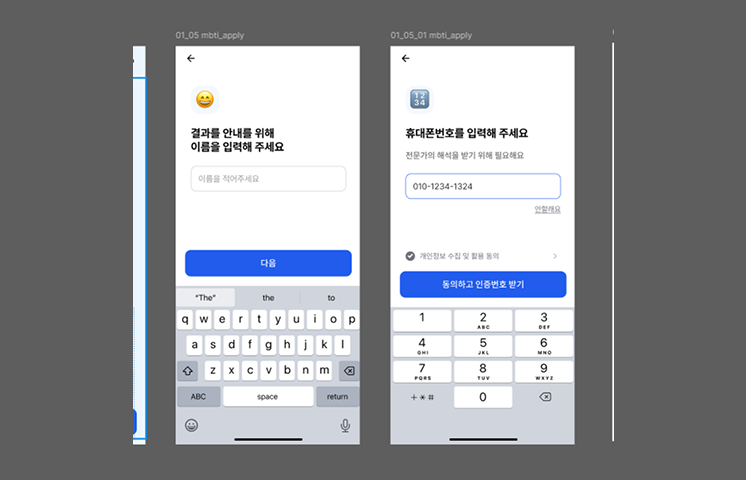
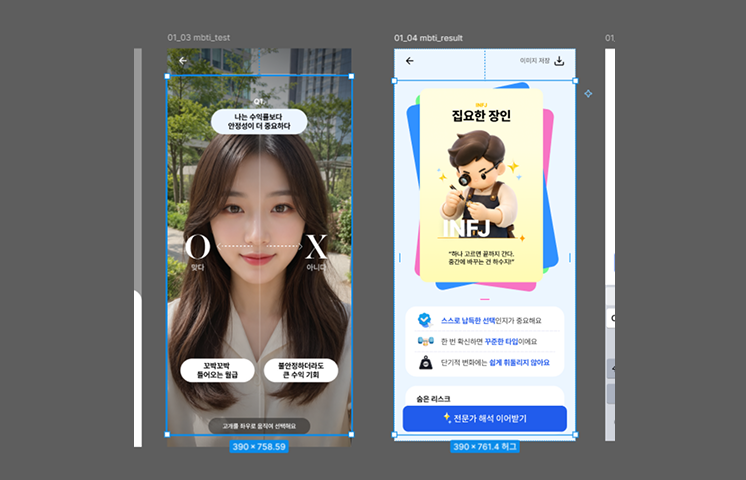
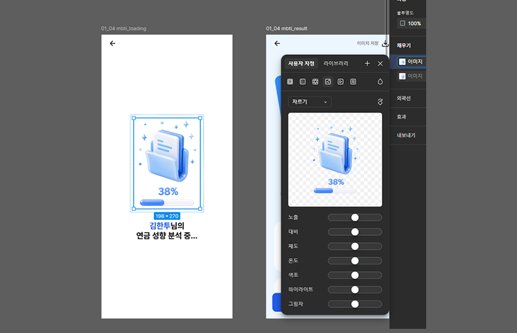
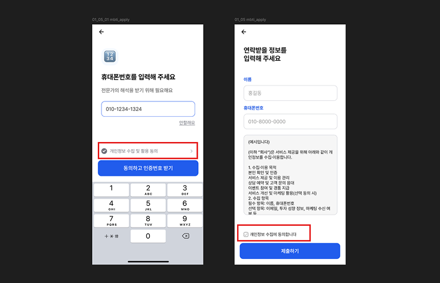

Claude design을 활용해 화면을 퍼블리싱하는 과정에서 마주친 문제와
해결 방법,
그리고 다음에 적용할 팁을 정리합니다.
Claude Design은 전달받은 피그마 화면을 그대로 마크업하기 때문에, 디자인에 포함된 모바일 키보드 영역까지 실제 화면 요소로 생성한다.
정리 포인트피그마 디자인을 퍼블리싱용으로 전달할 때는 키보드 영역을 미리 제거하거나, 키보드가 화면의 실제 구성 요소가 아님을 명확히 구분해 전달해야 한다. 그렇지 않으면 불필요한 영역이 마크업에 포함된다.

실제 피그마 작업물에서는 같은 컴포넌트 이름을 가지고 있어도 페이지마다 사이즈가 다른 경우가 있다.
정리 포인트이 때문에 컴포넌트 기준으로 추출한 영역(크기·간격) 값이 페이지마다 정확하지 않을 수 있으므로, 동일 컴포넌트의 사이즈를 통일하거나 페이지별 차이를 인지하고 검수해야 한다.

프로그래스바처럼 스크립트로 동작해야 하는 요소가 들어가는 경우, 퍼블리싱이 가능하도록 요소가 분리되어 전달되어야 한다.
정리 포인트전달된 피그마에서는 퍼센트 숫자와 프로그래스바 영역이 하나의 전체 이미지로 묶여 있어, 실제로도 이미지로 추출되어 작업되었다. 동적으로 제어해야 하는 요소는 이미지가 아닌 개별 요소로 분리해야 스크립트 적용이 가능하다.

전달된 피그마 디자인에서는 체크박스가 활성화 상태인지 비활성화 상태인지 구분이 모호했다.
정리 포인트체크박스처럼 상태가 나뉘는 요소는 활성화/비활성화 디자인을 모두 전달해야 각 상태를 정확히 마크업할 수 있다. 한쪽 상태만 전달되면 나머지 상태를 추정해야 한다.
